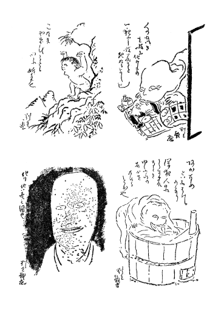
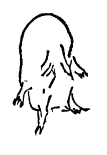
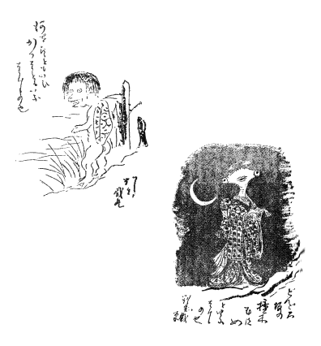

＊
これは怪談をするのではない、ばけものについて、いろいろと考えた事や感じたこと等、思い出すままに描いてみようと思うのである。画工である私は、ばけものというものの興味を、むしろ形の方から感じている。そんな訳で、私の百鬼夜行絵巻も文の間に添えておこうと思う。
君子は乱神怪力を語らず
乱神怪力を語るという事は、結局「嘘」という事に無神経だという事になる。
元来妖怪等というものは、人間の神秘的要求、恐怖本能、等から生れた空想を一層興味を以て潤色し
それと同時に人間には、そういういわゆる乱神怪力を、信じない本能がある。信じまいとする本能は誰れでも気がつくが、それではなく信じない本能というものがあると思える。つまり「何だかおかしい。そんな理屈はどうもない」という、唯物的、合理性本能というようなものが、学ばずして人間にはあるように思える。昔、科学の力のなかった時代でもよく、賢明にして意志の強いような人物は、「世に

ところで、怪力乱神を語りたがる人とても無論、この唯物的合理性本能は持っていようし、殊に今日のように学問の力でお化け退治の一と先ずは済んだ世の中にあっては一通り理論上では御化けを否定は出来るにかかわらず、やはり何となく御化けが好きなのである。
さて手っとり早く言ってしまえば、心から妖怪を信じる人は別として（そういう人はある、その人はまたいろいろな実験からたしかに信じているのでまた一つの感じがある）大てい妖怪談を好んで語る人は、一、多少嘘つき、一、反省の足らぬ人、一、他人の中にあって談ずるに、自己を持す意力の弱い人、一、甚だしく遊戯的気分の多い人、一、話の興味のために自己を偽る人、一、甚だしく対他的興味の強い人、一、芝居気のある人、一括していえば性格の弱い人が多いと思える。つまり才子風の人が多いと思う。
だから、御化けの話を好む人は大てい、意地の悪くない、多少他人に対して臆病な、好人物が多い。これに対して、化物はないという方の人間にはどうかすると、意志の強い、他人が少しは嘘と知りつつも面白さに引かれて怪談でもしている時に、その嘘の方を少し大げさににくみ、興味に遊んでいる方を楽しまない
君子というものは水野越前式な他人をゆるさない底のものではないが、しかし、和して同せず、真を愛し、嘘をいやがり、そういう感情的な事よりも理性を重んずるから、
ましてそれが人心を迷わす、昔時にあってはこれを一つのいましめとしたのは正に当を得た事で、この一言の中には
しかし、それにもかかわらず私は怪談という事には或る興味を持つものである。私は御化けのあるという事はまるで信じていない。また戯談は別として、他人に御化けのあるという事を話す事もしない。
しかし、怪談をやる事、聞く事は好きである。しかしそれは話として、それを味うのである。私は御化けというものは民族的、または人類の一種の芸術的な作品、一種の詩だと前にも述べたが、一つ一つの怪談に表われている様々な技巧や、様々な空想や、実感やらを味う事がすきなのだ。
かなり技巧的なものもあれば本能的に実感的なものがある。実感的な奴は、ピリッと来るつまり、「怪」という一つの実感がよく
こういう意味で、遊びを遊びとして楽しめば、乱神怪力を語ったとてあながち非君子とされなくってもすむだろうと思っている。
妖怪と幽霊の区別
幽霊とは人間の化けたもので妖怪とは
幽霊は大てい、思いを残すとか、うらみをのこすとかいう、
人に、君は幽霊と妖怪とどっちが
なるほど
私は幽霊などという事は無いと思うが、一種の「鬼気」という、主観上の事実は打消す事が出来ない。それは全然主観的なもので客観的には何物もないと知っていても、「鬼気」の感ずるものは外界にある。
幽霊がないと信じている自分がふと何かの調子で、「鬼気」を感ずる時、感ずる対象はどうしても、一種の「
もののけとは、物の気、または物の怪であろう。ともかくも幽霊よりはもっと客観性に富んだ存在である。
私は一つ目小僧だとか、あかなめ（深夜人のねしずまった時に
尤も幽霊に出られてはかなわないが、幽霊に出られたよりも妖怪というものに出られた方がもっと、徹底的な恐怖を味う事と思う。妖怪はどうしても一種のニヒリストだ。
尤も
狐狸の化けたのでは御話しにならない、私のいうのは本質的妖怪の事で狐狸の事に関しては後項で私見をのべよう。
妖怪の存否とその起元
妖怪変化の起元は、元始人類が、他の巨大な動物、未知の動物、または自然の威力等に対して持った実感に基づくと思える。この事は私が
ともかくも恐怖、人外の異常なるものに対する恐怖心は、人類以前の動物時代から持ち越しの本能となっていたものと思える。
だから人間は元始時代から
妖怪というものは、だから、一つの人間の生物的本能として存在するものという事が出来る。同じ理由によって、妖怪というものは客観的存在でないということも出来る。
幽霊に足のない訳
附 妖怪に足のある訳
幽霊に何故足がないか、尤も、幽霊に足のなくなったのは徳川中期以後だという事だ。それ以前の絵などには幽霊にも足がかいてあるという事を何かで読んだ事がある。
しかし、幽霊の絵としては、足のあるのは本当らしくない。妖怪だと足があるのは不自然でないけれど。
何故徳川中期以前の幽霊に足があって、それ以後に足がなくなったかというと、徳川中期以後は絵画のみならず
幽霊の絵もこの類を漏れず、如何にも幽霊らしい、本当の幽霊とはどんな感じだろうという幽霊のかかれたのは
ここにちょっと面白い例を引くと、西洋の天の使をかいたものの変遷を見ると、日本幽霊の画の変りかたとかなり面白い共通がある。
即ち初期ルネサンス時代（ヴァン・エック、アンゼリコ、等）の天の使には足がある、また崇厳な端麗な感じはどこともなくあるが、その
ところがチントレットになってやや天人は地上的でなくなり、グレコになると、一層この世ばなれという事が
更にレムブラントになるともし天人というものが、仮にあるとして、それが姿をあらわしたらこうもあろうという風に、つまり、実写的天人がかいてある。

ヨセフだったか何だか忘れたが二人の老夫婦？ のようなもののところへ現われている天使は、その体が透きとうていて背景の物体がみえている。正に幽霊の如く、足もあいまいになっている。
これらの事に関する美術上の批評は本論でないからわざと省いて、ともかくも、芸術というものは後世になるに従い、つまり人間の科学的になるにしたがって、実写的になりたがる（写実的ではなく）。活動写真がよろこばれるのはその理である。
それで幽霊も、古い絵巻等には足のある、常人とかわらぬものが描いてある。
そこでここに一つの断定が出来る、つまり幽霊というものを本当にモティフにしたのは、つまり独立して、幽霊の幽霊らしさをモティフとしたのはどうしても応挙以後である。徳川中期以後である。
その前の化けものの画はまだ完全に幽霊をモティフにしたものはなく、大てい妖怪をモティフにしている。
これは、画の描き方の変遷によるのであって、徳川中期以後にはつまり、幽霊の幽霊らしさを描く技法なり、画の傾向なりが適して来たから、さてこそ、幽霊画というモティフも、おのずと生れて来たわけで、画法の変遷と、モティフの興廃とは有機的に混一しているものである。徳川中期以前はつまり、その画法なり画的興味なりが、むしろ妖怪を生むのに適切であったと思える。
さて、前おきが長くなったがところで幽霊には足のない方がより実感的であるという訳は解ったはずである。それなら何故幽霊に足がないか。
この事を話す前に、私は私の見た幽霊の事を話そう。それは無論、半分夢のさめかけた時にみた幻覚だが、八、九年前私は夜中、ふと、自分のねている
そしてその時私は、なるほど、幽霊には足がないなと思った。何故なら私のみたそれは、頭と手と胸の辺だけであとはボーッとしていたからである。
この事が幽霊が主観的のものだという事の一つの証拠にもなるのだが。人は誰でもその知人の事を考え、その知人を思い出す時胸から上を考えるのが当然で、その人の足を考える人はめったにない。特に足に異常のある人とか、ともかく足という事に特異の注意のないかぎり、人はその人の胸から上を思う。
この事が幽霊に足のない理由で、幽霊を幽霊らしい感じに描こうとするものはどうしてもその実感を実写的に写さねばならぬのである。
次にそれなら何故妖怪には足があるか、三つ目入道、
これらの画は、つまり一つの「怪」とか、「鬼気」とかいう無形の実感を、その時々の感じに応じて様々に具象させたもので、画工の想像力によってよりぴったりとその「怪」「魔」「鬼気」等の無形の実感を表現させたものである。
更にまた、われわれは、物象を一つじっと見ているとその実在感が変に神秘的に見え、時によるときみ悪くみえて来る事がある。妖怪変化の中、器物に手足が
幽霊の方はどっちかいうと、幽霊の幻覚がモティフになっているから足がないのであるが、これに反して、妖怪に足のあるのは、それが全然、想像的な創作だからである。殊に、目のないところに目をつけたり手や足を生やすことが一つの「怪」の気持をなすからで、此処へ行くと幽霊の方が、リアリスチックであるが、またそれだけに「怪」としての味ではポピュラーである。
一つ目小僧の味
私は一目小僧という妖怪を、妖怪創作家としての日本民族の一つの大なる傑作だと思っている。
ちょっと考えると、この妖怪は少しも恐ろしい事はないむしろ
一つ目小僧というものを、普通にとりあつかっているよりもっと進んだ感覚でとりあつかってみる時、即ち、もっと、リアリスチックに、生きたものとして感じてみる時、皮膚を持ち肉を持った生きたものとして感じてみる時、それは誠にきみのわるい、生々しい、そしてミスチックな生きものである。
一つ目小僧を滑稽なものと感じる感覚は一つ目小僧を生のものとして感じず、
一つ目の味はぬるりとしたちょっと奇形児の
ともかく一つ目の味は、へんに生きたようなきびのわるいところにある。短身で、頭がひどく大きく、色は白く、口があかい。こういう奴はどこかにいそうな感じがある。
一体目というものはミスチックなものだ、近代フランス美術界で名うての、ルドンも一時
しかし東洋の一つ目の方がどうもリアリスチックでへんに味が濃く、きみが悪いと思う。
日本妖怪の病的感
日本妖怪の感じは概して病的である、前項にちょっと一つ目小僧の感じが奇形児に似ている事をかいたが、古い

この事は一見古人が、妖怪を表現するために、自分のみた病人や奇形児からヒントを得てその形をかりたというようにも考えられるが私の考としてはそれは少し概念的な考え方だと思う。勿論そういう点もあろうが、私にいわすと、きみ悪いものを描こうとするとどうしても「病人」の感じとなり、デカダンスが形をとろうとすればどうしても、この世に現在する生存上のデカダンス、即ち、病気とか、奇形とか不具とかの
日本妖怪の味は、生きものの、きみ悪さというものを生かしている。人は美人の髪をみて甚だ美くしいと思い、その腕をみてはなやましくも思うだろうが、もし、如何に美人のでも、髪が切って落ちていたり、腕や足が離れてそれだけあったりしたら正にきみの悪いものである。離れて落ちていないでも、ただ腕や、足というものなどだけじっとみているとへんに生きもののきみ悪さがある。そのきみの悪さを日本妖怪の作者は
壁から手の出る話は『旧約聖書』にもあるが、日本の便所や天井から出る手は正に凄い。例の『
ともかくも日本妖怪の味は概して、生々とした、病的感、

また、のっぺらぼう、またはぞべらと呼ばれるところの妖怪がある。或る時は非常に美しい御姫様または奥女中風の後姿をしているが、それがふとふり向くと目も鼻も口も何もない、顔をしている。その風姿は必ずしもきまってはいないが、ともかくも顔の道具をすべて持たない妖怪であるが、これらも一種の奇形感、病気感、を持っている。きみの悪い味である。
外に、
ぞべらも、その撞木娘もともに多く美装した娘であるが、これがまたへんに凄い不思議な
狐にばかされるという事の合理的の解釈
附 狐附きの考
これは誰れでも考えついている事かもしれないが私が一通りすじ道を立て、自分でも合理な説明と思えるのでかく事にした。
狐にばかされるという事実は実際にある事であろう。しかし、それはそういう結果があるのでその元因は何も狐がそれを本当に行うのではない。
一口にいえばこれは自己催眠の民族的一殊異現象という事が出来る。
即ち、一時的に狂態を演ずるところの
この状態に入るのは一種の催眠状態から入るものらしく、余の知っている某老人の
ともかく催眠術をかけるのは催眠状態に入らしめて、後に暗示を与え、その暗示通りになるというのだそうだが、この狐に化されるのもそれに適合している。即ち化かされるものは、狐が化るという事をどこかで信じているか疑っていてももし本当なら
狐つきはやはり一種の一時的狂気であるが、狐に化かされるのよりは永続的で、また催眠状態ではなく本当に気がちがうのである。
ただ普通の狂気と
この時は狐に化かされている時の状態と同じで丁度酔漢が酔った時に
即ち狐つきが油揚げを急に好きになったり、大食をしたりするが、大食の方はそういう狂気の性質もある、だが油揚げの方は正に病気前の見聞が暗示となったものである。何となれば肉食獣である狐は必ずしも油あげを殊に好くものではないからである。
とにかく狐が化かすという説は日本が主のようであるがその元は支那か印度あたりにあるものかもしれないがよくは知らぬ。
心理学はちっとも知らないのだからちがっていたら御かんべん御かんべん。
鬼について
鬼というものは東西両洋、その他世界中に大ていあるようだ、多少ずつの変化はあろうけれど。
しかし、支那における鬼の観念は支那らしいへんに実感的なきみのわるいものである、日本の鬼も、時代時代で大分その感じが変って来ているようである。
鬼には、地獄に住んでいる一種の巡査としての鬼と、現世の深山、たとえば、
ともかくも「鬼」という感じは、たしかに人間の感ずる、一種の「気」である。兇事を喜び
私のみた夢に、鬼をへんに生々しくみた事がある。誰れでも、これ位リアリスチックな、生きものとしてこの鬼を見た人はあるまいと思う。
人々は、鬼といえば
その夢はこうである。丁度その時分知人の家庭に少しゴタゴタがあったのだが、夢の中もそのゴタゴタのため、その知人の家へ私と家内とで行っているのである。八畳ほどの部屋で、中央に電気がついている。夜である。皆座敷に立ったまま何か話している、私の家内の
ばけもの談大分永くつまらぬ事をかいた、この辺でこのばけものも消えようと思う。
（大正十三年八月二日記）